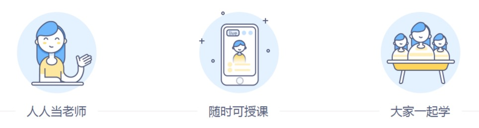
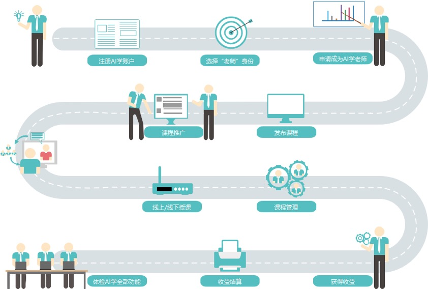
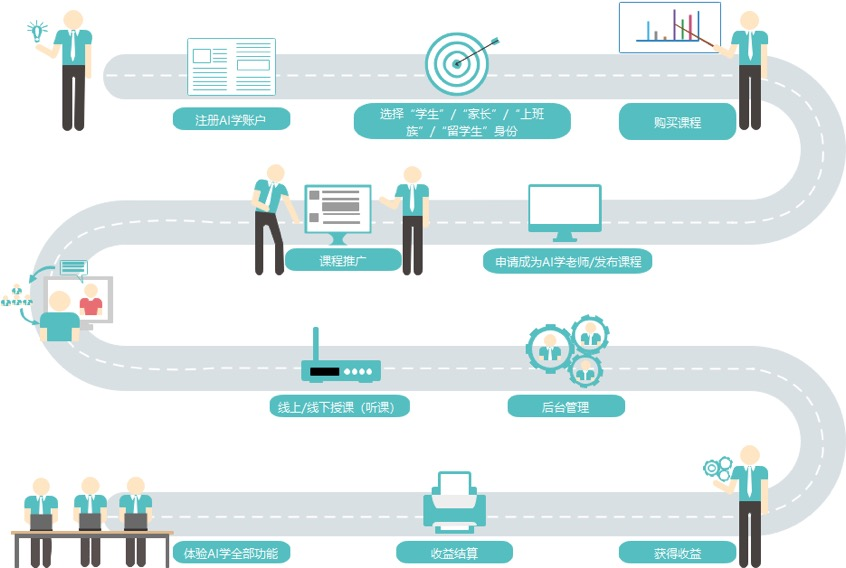

欢迎使用AI学！
AI学，原名"高招"，由环球壹学（北京）教育科技有限公司独家研发，目标是成为教育界的智能京宝（京东、淘宝），打造创新、智能的 B2B2C 在线教育平台（也是双师教育平台、O2O 教育平台），定位为"全球一站式智能教育共享平台"，目标为全球数亿大中小学生、家长、老师、上班族、教育培训机构和学校提供全面的教育服务，为高校和企业提供招生招聘服务，包括招生双师教学服务、在线授课服务、招生咨询服务、品牌宣传服务、认证推荐服务、会员分享服务、学帮互助服务、知识付费服务等，有直播课、录播课、双师课堂、线下班课、线上线下1对1、资料课件、综合服务、图书教具、短视频直播、知识付费、学帮互助等几种形式，分壹竞赛、科创客、壹培优、壹高考、壹志愿等多个栏目类别，涵盖了从幼教到大学就业后的学历教育、非学历教育、职业教育和技能教育的优质教育内容，人工智能的自适应学习和其它人工智能应用使学习更高效、个性化。AI学面向所有用户免费使用，用户角色可以转换，人人都可做老师和知识分享付费。各类教育机构和教师都可免费入驻、认证和发布各类课程，可免费使用平台授课，以及拓展线上线下各类生源，可以按位置查找各类机构位置。
AI学的主要功能:
1.【身份】提供学生、家长、教师（在职、自由教师）、留学生、上班族和机构等多种身份，不同身份提供不同的功能，用户身份可以转换。
2.【课程】可以发布课程，进行课程学习。课程类型多样，包括：直播课、录播课、线下班课、线上线下1对1课程、资料课件、综合服务等。
3.【学帮】教育界的社交圈，有问题来这里问，想吐槽、想找同伴、想教学，来学帮。
4.【志愿大师】高考志愿填报软件，利用大数据分析，不浪费一分高考分。独有自主招生预测分析功能，分析学生可参与哪几所高校的自主招生并进行预测。
5.【竞赛】提供竞赛全程通服务：竞赛报名、辅导、刷题、社区、日程安排、结果查询、证书发放等，还可申请成为竞赛志愿者。
6.【自主招生】了解最新、最全的自主招生简章，掌握高校招生最新动态，模拟阳光高考报名流程，提前熟悉每项报考环节。提供社会实践、全程无忧、预测测评、专利论文、奥赛竞赛、初审报名、志愿管理、自招经验、科创、备考无忧等栏目，帮助学生更好的进行自主招生考试。
7.【资讯】最全、最快的升学资讯通道。
8.【更多】精品的学习升学文章，专业的学习资料，一站式升学规划，尽在AI学。
如果您是老师：
如果您是机构：

如果您是学生/家长/上班族/留学生：
在AI学中，不同身份实际上无明显界限，如老师、机构的身份同样可以购买课程进行听课。而学生/家长/上班族/留学生同样可以授课。本帮助主要强调不同身份的差异。
更多教程请参考AI学帮助中心。如有任何问题或建议反馈，也请直接联系我们，我们将及时为您解答。